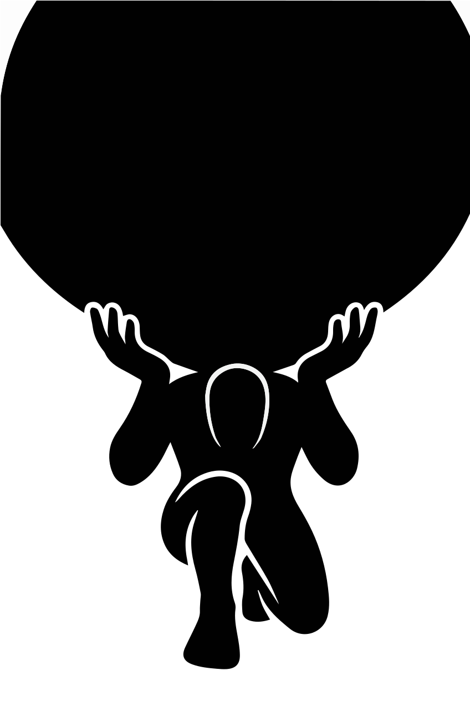
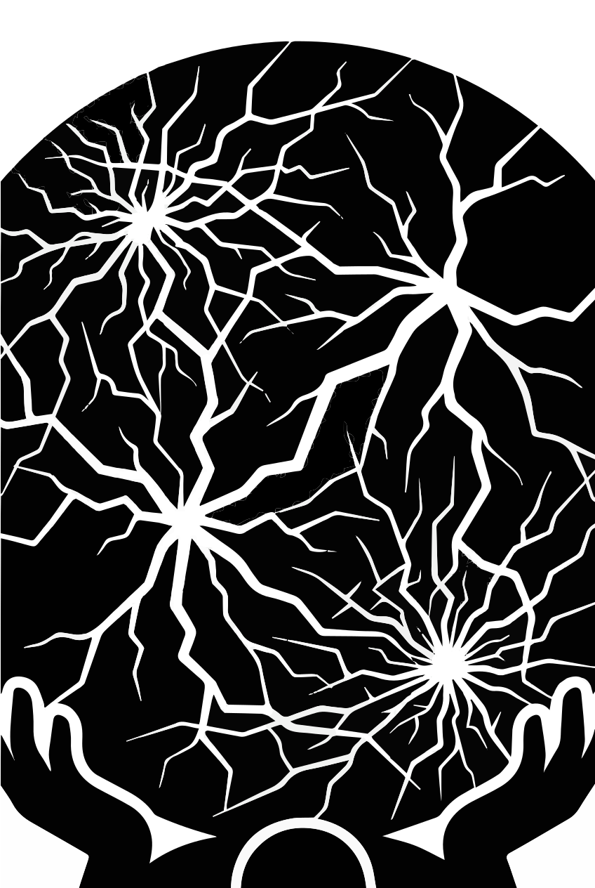

I. The Burden We were born to carry.
II. Until What bends must break.
III. Beyond And from breaking — begin.
Enter the fracture.
Four points of light. Choose your descent.


I. The Burden We were born to carry.
II. Until What bends must break.
III. Beyond And from breaking — begin.
Four points of light. Choose your descent.